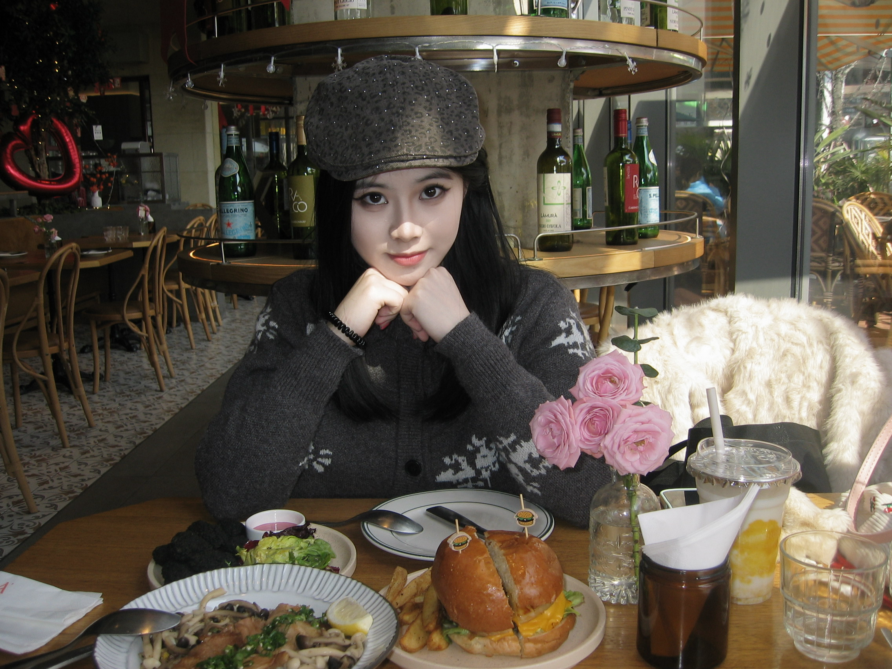

VISUAL DESIGNER · 2020—NOW
麻真瑜
PORTFOLIO
视觉设计师
用图像、品牌与角色
讲述有温度的故事。
ABOUT ME
把好奇心、
烟火气和想象力，
做成有记忆点的视觉。
麻真瑜，视觉设计师。作品横跨品牌设计、IP 形象、运营视觉和标志系统，擅长将日常观察转化为鲜活的视觉语言。
点击任意项目，浏览完整的作品过程与应用展示。
ABOUT MEABOUT ME麻真瑜

✦●WHO AM I?
麻真瑜
视觉设计师
把日常观察、品牌故事与角色想象，做成有温度、有记忆点的视觉体验。
AiPsFigmaAe
prizes
- 2020-2024学年连续四学年获得本科生一、二、三等奖学金
- 2020-2024学年连续四学年荣获“优秀共青团员”、“三好学生”“优秀班干部”称号
- 2024年天津理工大学免初试硕士新生特等学业奖学金
- 第19届中国好创意大赛国赛及省赛数字摄影类研究生三等奖
- 2025年度海峡两岸大学生设计工作坊三等奖
projects
- 哈尔滨商业大学70周年校庆标志设计提案（最终落地执行）
- 哈尔滨商业大学党建项目商海红帆logo设计提案（最终落地执行）
- 哈尔滨工业大学2024年度新生录取通知书胸章设计（最终落地执行）
FOCUS
01品牌
品牌
设计
品牌策略 / 视觉识别 / 包装与场景应用
02IP
IP
形象
角色设定 / 表情系统 / 内容与衍生设计
03运营
运营
视觉
新媒体视觉 / SVG 互动 / 节日营销活动
LET'S CREATE SOMETHING NICE
有趣的想法，
一起发生。
mzy15268855212@163.com ↗把脑子里奇奇怪怪可可爱爱的想法，变成一页页画面。
设计之旅还在继续......